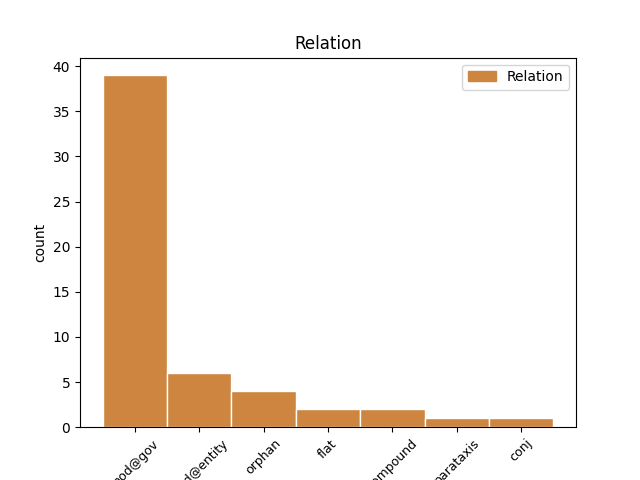
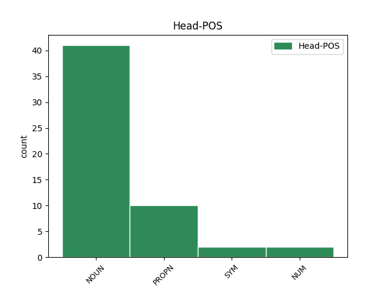
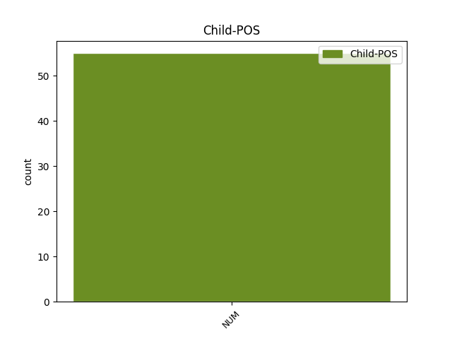

Distribution of features within this leaf



Agreement Rules sorted by frequency.
- When the dependent token is the modifer(mod@gov) of the head token, and the head token is NOUN and the dependent token is NUM.
1 Пэўны _ _ _ _ 0 _ _ _
2 час _ _ _ _ 0 _ _ _
3 таму _ _ _ _ 0 _ _ _
4 ў _ _ _ _ 0 _ _ _
5 галоўным _ _ _ _ 0 _ _ _
6 медыцынскiм _ _ _ _ 0 _ _ _
7 ведамстве _ _ _ _ 0 _ _ _
8 спрабавалi _ _ _ _ 0 _ _ _
9 скласцi _ _ _ _ 0 _ _ _
10 прыблiзны _ _ _ _ 0 _ _ _
11 " _ _ _ _ 0 _ _ _
12 сцэнарый _ _ _ _ 0 _ _ _
13 " _ _ _ _ 0 _ _ _
14 на _ _ _ _ 0 _ _ _
15 блiжэйшыя _ _ _ _ 0 _ _ _
16 5 _ _ _ _ 0 _ _ _
17 - _ _ _ _ 0 _ _ _
18 6 _ _ _ _ 0 _ _ _
19 гадоў _ _ _ _ 0 _ _ _
20 : _ _ _ _ 0 _ _ _
21 з _ _ _ _ 0 _ _ _
22 улiкам _ _ _ _ 0 _ _ _
23 аб'ёмаў _ _ _ _ 0 _ _ _
24 падрыхтоўкi _ _ _ _ 0 _ _ _
25 спецыялiстаў _ _ _ _ 0 _ _ _
26 у _ _ _ _ 0 _ _ _
27 медыцынскiх _ _ _ _ 0 _ _ _
28 ВНУ _ _ _ _ 0 _ _ _
29 , _ _ _ _ 0 _ _ _
30 дэмаграфiчных _ _ _ _ 0 _ _ _
31 тэндэнцый _ _ _ _ 0 _ _ _
32 і _ _ _ _ 0 _ _ _
33 многiх _ _ _ _ 0 _ _ _
34 iншых _ _ _ _ 0 _ _ _
35 акалiчнасцяў _ _ _ _ 0 _ _ _
36 атрымлiвалася _ _ _ _ 0 _ _ _
37 , _ _ _ _ 0 _ _ _
38 што _ _ _ _ 0 _ _ _
39 патрэбы _ _ _ _ 0 _ _ _
40 айчыннай _ _ _ _ 0 _ _ _
41 сiстэмы _ _ _ _ 0 _ _ _
42 аховы _ _ _ _ 0 _ _ _
43 здароўя _ _ _ _ 0 _ _ _
44 ва _ _ _ _ 0 _ _ _
45 ўрачэбных _ _ _ _ 0 _ _ _
46 кадрах _ _ _ _ 0 _ _ _
47 могуць _ _ _ _ 0 _ _ _
48 быць _ _ _ _ 0 _ _ _
49 задаволеныя _ _ _ _ 0 _ _ _
50 да _ _ _ _ 0 _ _ _
51 2014 2014 NUM CD Case=Gen|NumType=Card 52 mod@gov _ _
52 года год NOUN NN Animacy=Inan|Case=Gen|Gender=Masc|Number=Sing 0 _ _ _
53 . _ _ _ _ 0 _ _ _
1 Як _ _ _ _ 0 _ _ _
2 паведамляў _ _ _ _ 0 _ _ _
3 Тэлеграф _ _ _ _ 0 _ _ _
4 , _ _ _ _ 0 _ _ _
5 КДБ _ _ _ _ 0 _ _ _
6 спыніў _ _ _ _ 0 _ _ _
7 дзейнасць _ _ _ _ 0 _ _ _
8 беларускага _ _ _ _ 0 _ _ _
9 аддзялення _ _ _ _ 0 _ _ _
10 новай _ _ _ _ 0 _ _ _
11 фінансавай _ _ _ _ 0 _ _ _
12 піраміды _ _ _ _ 0 _ _ _
13 Сяргея _ _ _ _ 0 _ _ _
14 Маўродзі _ _ _ _ 0 _ _ _
15 " _ _ _ _ 0 _ _ _
16 МММ МММ PROPN NNP Animacy=Inan|Case=Nom|Gender=Masc|Number=Sing 0 _ _ _
17 - _ _ _ _ 0 _ _ _
18 2011 2011 NUM CD Case=Nom|NumType=Card 16 mod@entity _ SpaceAfter=No
19 " _ _ _ _ 0 _ _ _
20 . _ _ _ _ 0 _ _ _
1 Іспанія _ _ _ _ 0 _ _ _
2 выступіць _ _ _ _ 0 _ _ _
3 пад _ _ _ _ 0 _ _ _
4 нумарам _ _ _ _ 0 _ _ _
5 19 _ _ _ _ 0 _ _ _
6 , _ _ _ _ 0 _ _ _
7 Італія _ _ _ _ 0 _ _ _
8 -- _ _ _ _ 0 _ _ _
9 10 _ _ _ _ 0 _ _ _
10 , _ _ _ _ 0 _ _ _
11 Германія _ _ _ _ 0 _ _ _
12 -- _ _ _ _ 0 _ _ _
13 20 _ _ _ _ 0 _ _ _
14 , _ _ _ _ 0 _ _ _
15 Вялікабрытанія _ _ _ _ 0 _ _ _
16 -- _ _ _ _ 0 _ _ _
17 1 _ _ _ _ 0 _ _ _
18 , _ _ _ _ 0 _ _ _
19 Францыя Францыя PROPN NNP Animacy=Inan|Case=Nom|Gender=Fem|Number=Sing 0 _ _ _
20 -- _ _ _ _ 0 _ _ _
21 9 9 NUM CD Case=Nom|NumType=Card 19 orphan _ SpaceAfter=No
22 . _ _ _ _ 0 _ _ _
1 Пра _ _ _ _ 0 _ _ _
2 гэта _ _ _ _ 0 _ _ _
3 гаворыцца _ _ _ _ 0 _ _ _
4 ў _ _ _ _ 0 _ _ _
5 сумеснай _ _ _ _ 0 _ _ _
6 пастанове _ _ _ _ 0 _ _ _
7 Савета _ _ _ _ 0 _ _ _
8 міністраў _ _ _ _ 0 _ _ _
9 і _ _ _ _ 0 _ _ _
10 Нацыянальнага _ _ _ _ 0 _ _ _
11 банка _ _ _ _ 0 _ _ _
12 Беларусі _ _ _ _ 0 _ _ _
13 № _ _ _ _ 0 _ _ _
14 223 223 NUM CD Case=Nom|NumType=Card 0 _ _ _
15 / _ _ _ _ 0 _ _ _
16 7 7 NUM CD Case=Nom|NumType=Card 14 flat _ _
17 ад _ _ _ _ 0 _ _ _
18 12 _ _ _ _ 0 _ _ _
19 сакавіка _ _ _ _ 0 _ _ _
20 . _ _ _ _ 0 _ _ _
1 Начная _ _ _ _ 0 _ _ _
2 тэмпература _ _ _ _ 0 _ _ _
3 ў _ _ _ _ 0 _ _ _
4 сярэднім _ _ _ _ 0 _ _ _
5 складзе _ _ _ _ 0 _ _ _
6 каля _ _ _ _ 0 _ _ _
7 0 _ _ _ _ 0 _ _ _
8 °С _ _ _ _ 0 _ _ _
9 , _ _ _ _ 0 _ _ _
10 днём _ _ _ _ 0 _ _ _
11 паветра _ _ _ _ 0 _ _ _
12 прагрэецца _ _ _ _ 0 _ _ _
13 да _ _ _ _ 0 _ _ _
14 + _ _ _ _ 0 _ _ _
15 8 8 NUM CD Case=Gen|NumType=Card 19 mod@gov _ _
16 .. _ _ _ _ 0 _ _ _
17 + _ _ _ _ 0 _ _ _
18 13 _ _ _ _ 0 _ _ _
19 °С °с SYM SYM Animacy=Anim|Case=Gen|Gender=Masc|Number=Sing 0 _ _ _
20 . _ _ _ _ 0 _ _ _
1 Па _ _ _ _ 0 _ _ _
2 паведамленні _ _ _ _ 0 _ _ _
3 УКДБ _ _ _ _ 0 _ _ _
4 , _ _ _ _ 0 _ _ _
5 у _ _ _ _ 0 _ _ _
6 асноўным _ _ _ _ 0 _ _ _
7 у _ _ _ _ 0 _ _ _
8 галіне _ _ _ _ 0 _ _ _
9 ўкладчыкі _ _ _ _ 0 _ _ _
10 ўносілі _ _ _ _ 0 _ _ _
11 ў _ _ _ _ 0 _ _ _
12 набыццё _ _ _ _ 0 _ _ _
13 акцый _ _ _ _ 0 _ _ _
14 сумы _ _ _ _ 0 _ _ _
15 да _ _ _ _ 0 _ _ _
16 10 10 NUM CD Case=Gen|NumType=Card 17 compound _ _
17 тыс. тыс. NOUN NN Animacy=Inan|Case=Gen|Gender=Fem|Number=Plur 0 _ _ _
18 даляраў _ _ _ _ 0 _ _ _
19 . _ _ _ _ 0 _ _ _
1 У _ _ _ _ 0 _ _ _
2 2009 _ _ _ _ 0 _ _ _
3 годзе _ _ _ _ 0 _ _ _
4 прырост _ _ _ _ 0 _ _ _
5 колькасцi _ _ _ _ 0 _ _ _
6 ўрачоў _ _ _ _ 0 _ _ _
7 па _ _ _ _ 0 _ _ _
8 сiстэме _ _ _ _ 0 _ _ _
9 аховы _ _ _ _ 0 _ _ _
10 здароўя _ _ _ _ 0 _ _ _
11 склаў _ _ _ _ 0 _ _ _
12 738 _ _ _ _ 0 _ _ _
13 чалавек _ _ _ _ 0 _ _ _
14 , _ _ _ _ 0 _ _ _
15 аднак _ _ _ _ 0 _ _ _
16 гэта _ _ _ _ 0 _ _ _
17 не _ _ _ _ 0 _ _ _
18 знiзiла _ _ _ _ 0 _ _ _
19 нагрузку _ _ _ _ 0 _ _ _
20 на _ _ _ _ 0 _ _ _
21 працуючых _ _ _ _ 0 _ _ _
22 урачоў _ _ _ _ 0 _ _ _
23 , _ _ _ _ 0 _ _ _
24 наадварот _ _ _ _ 0 _ _ _
25 , _ _ _ _ 0 _ _ _
26 каэфiцыент _ _ _ _ 0 _ _ _
27 сумяшчальнiцтва _ _ _ _ 0 _ _ _
28 вырас _ _ _ _ 0 _ _ _
29 і _ _ _ _ 0 _ _ _
30 складае _ _ _ _ 0 _ _ _
31 цяпер _ _ _ _ 0 _ _ _
32 1,41 _ _ _ _ 0 _ _ _
33 стаўкi стаўкi NOUN RB Animacy=Inan|Case=Gen|Gender=Fem|Number=Sing 0 _ _ _
34 ( _ _ _ _ 0 _ _ _
35 у _ _ _ _ 0 _ _ _
36 2008 _ _ _ _ 0 _ _ _
37 годзе _ _ _ _ 0 _ _ _
38 — _ _ _ _ 0 _ _ _
39 1,39 1,39 NUM CD Case=Gen|NumType=Card 33 parataxis _ SpaceAfter=No
40 ) _ _ _ _ 0 _ _ _
41 . _ _ _ _ 0 _ _ _
1 Пэўны _ _ _ _ 0 _ _ _
2 час _ _ _ _ 0 _ _ _
3 таму _ _ _ _ 0 _ _ _
4 ў _ _ _ _ 0 _ _ _
5 галоўным _ _ _ _ 0 _ _ _
6 медыцынскiм _ _ _ _ 0 _ _ _
7 ведамстве _ _ _ _ 0 _ _ _
8 спрабавалi _ _ _ _ 0 _ _ _
9 скласцi _ _ _ _ 0 _ _ _
10 прыблiзны _ _ _ _ 0 _ _ _
11 " _ _ _ _ 0 _ _ _
12 сцэнарый _ _ _ _ 0 _ _ _
13 " _ _ _ _ 0 _ _ _
14 на _ _ _ _ 0 _ _ _
15 блiжэйшыя _ _ _ _ 0 _ _ _
16 5 5 NUM _ Case=Acc|NumType=Card 0 _ _ _
17 - _ _ _ _ 0 _ _ _
18 6 6 NUM _ Case=Acc|NumType=Card 16 conj _ _
19 гадоў _ _ _ _ 0 _ _ _
20 : _ _ _ _ 0 _ _ _
21 з _ _ _ _ 0 _ _ _
22 улiкам _ _ _ _ 0 _ _ _
23 аб'ёмаў _ _ _ _ 0 _ _ _
24 падрыхтоўкi _ _ _ _ 0 _ _ _
25 спецыялiстаў _ _ _ _ 0 _ _ _
26 у _ _ _ _ 0 _ _ _
27 медыцынскiх _ _ _ _ 0 _ _ _
28 ВНУ _ _ _ _ 0 _ _ _
29 , _ _ _ _ 0 _ _ _
30 дэмаграфiчных _ _ _ _ 0 _ _ _
31 тэндэнцый _ _ _ _ 0 _ _ _
32 і _ _ _ _ 0 _ _ _
33 многiх _ _ _ _ 0 _ _ _
34 iншых _ _ _ _ 0 _ _ _
35 акалiчнасцяў _ _ _ _ 0 _ _ _
36 атрымлiвалася _ _ _ _ 0 _ _ _
37 , _ _ _ _ 0 _ _ _
38 што _ _ _ _ 0 _ _ _
39 патрэбы _ _ _ _ 0 _ _ _
40 айчыннай _ _ _ _ 0 _ _ _
41 сiстэмы _ _ _ _ 0 _ _ _
42 аховы _ _ _ _ 0 _ _ _
43 здароўя _ _ _ _ 0 _ _ _
44 ва _ _ _ _ 0 _ _ _
45 ўрачэбных _ _ _ _ 0 _ _ _
46 кадрах _ _ _ _ 0 _ _ _
47 могуць _ _ _ _ 0 _ _ _
48 быць _ _ _ _ 0 _ _ _
49 задаволеныя _ _ _ _ 0 _ _ _
50 да _ _ _ _ 0 _ _ _
51 2014 _ _ _ _ 0 _ _ _
52 года _ _ _ _ 0 _ _ _
53 . _ _ _ _ 0 _ _ _
Disagree Examples:
1 Чацвёра чацвёра NUM CD Case=Nom|NumType=Sets 2 mod@gov _ _
2 сяброў сябар NOUN NN Animacy=Anim|Case=Gen|Gender=Masc|Number=Plur 0 _ _ _
3 не _ _ _ _ 0 _ _ _
4 змаглі _ _ _ _ 0 _ _ _
5 яго _ _ _ _ 0 _ _ _
6 выратаваць _ _ _ _ 0 _ _ _
7 . _ _ _ _ 0 _ _ _
1 Вельмі _ _ _ _ 0 _ _ _
2 шмат шмат NUM DT Case=Nom|NumType=Card 4 mod@gov _ _
3 маіх _ _ _ _ 0 _ _ _
4 сяброў сябар NOUN NN Animacy=Anim|Case=Gen|Gender=Masc|Number=Plur 0 _ _ _
5 беларускую _ _ _ _ 0 _ _ _
6 ведаюць _ _ _ _ 0 _ _ _
7 і _ _ _ _ 0 _ _ _
8 многія _ _ _ _ 0 _ _ _
9 ёй _ _ _ _ 0 _ _ _
10 карыстаюцца _ _ _ _ 0 _ _ _
11 . _ _ _ _ 0 _ _ _
1 Я _ _ _ _ 0 _ _ _
2 ведаю _ _ _ _ 0 _ _ _
3 прынамсі _ _ _ _ 0 _ _ _
4 трох тры NUM CD Animacy=Anim|Case=Acc|NumType=Card 5 mod@gov _ _
5 чалавекаў чалавек NOUN NN Animacy=Anim|Case=Gen|Gender=Masc|Number=Plur 0 _ _ _
6 , _ _ _ _ 0 _ _ _
7 якіх _ _ _ _ 0 _ _ _
8 мне _ _ _ _ 0 _ _ _
9 атрымалася _ _ _ _ 0 _ _ _
10 натхніць _ _ _ _ 0 _ _ _
11 , _ _ _ _ 0 _ _ _
12 і _ _ _ _ 0 _ _ _
13 яны _ _ _ _ 0 _ _ _
14 сапраўды _ _ _ _ 0 _ _ _
15 пачалі _ _ _ _ 0 _ _ _
16 карыстацца _ _ _ _ 0 _ _ _
17 беларускай _ _ _ _ 0 _ _ _
18 . _ _ _ _ 0 _ _ _
1 Як _ _ _ _ 0 _ _ _
2 адзначыла _ _ _ _ 0 _ _ _
3 Святлана _ _ _ _ 0 _ _ _
4 Рыбакова _ _ _ _ 0 _ _ _
5 , _ _ _ _ 0 _ _ _
6 у _ _ _ _ 0 _ _ _
7 апошнія _ _ _ _ 0 _ _ _
8 сем сем NUM CD Case=Acc|NumType=Card 9 mod@gov _ _
9 гадоў год NOUN NN Animacy=Inan|Case=Gen|Gender=Masc|Number=Plur 0 _ _ _
10 красавіка _ _ _ _ 0 _ _ _
11 ў _ _ _ _ 0 _ _ _
12 Беларусі _ _ _ _ 0 _ _ _
13 было _ _ _ _ 0 _ _ _
14 на _ _ _ _ 0 _ _ _
15 адзін _ _ _ _ 0 _ _ _
16 - _ _ _ _ 0 _ _ _
17 тры _ _ _ _ 0 _ _ _
18 градусы _ _ _ _ 0 _ _ _
19 цяплей _ _ _ _ 0 _ _ _
20 чым _ _ _ _ 0 _ _ _
21 звычайна _ _ _ _ 0 _ _ _
22 . _ _ _ _ 0 _ _ _
1 Самым _ _ _ _ 0 _ _ _
2 цёплым _ _ _ _ 0 _ _ _
3 красавіцкім _ _ _ _ 0 _ _ _
4 днём _ _ _ _ 0 _ _ _
5 у _ _ _ _ 0 _ _ _
6 Мінску _ _ _ _ 0 _ _ _
7 было _ _ _ _ 0 _ _ _
8 22 _ _ _ _ 0 _ _ _
9 красавіка _ _ _ _ 0 _ _ _
10 1950 _ _ _ _ 0 _ _ _
11 г. _ _ _ _ 0 _ _ _
12 ( _ _ _ _ 0 _ _ _
13 26 26 NUM CD Case=Nom|NumType=Card 14 mod@gov _ SpaceAfter=No
14 °С °с SYM SYM Animacy=Anim|Case=Gen|Gender=Masc|Number=Sing 0 _ _ _
15 ) _ _ _ _ 0 _ _ _
16 , _ _ _ _ 0 _ _ _
17 а _ _ _ _ 0 _ _ _
18 самым _ _ _ _ 0 _ _ _
19 халодным _ _ _ _ 0 _ _ _
20 -- _ _ _ _ 0 _ _ _
21 1 _ _ _ _ 0 _ _ _
22 красавіка _ _ _ _ 0 _ _ _
23 1923 _ _ _ _ 0 _ _ _
24 г. _ _ _ _ 0 _ _ _
25 ( _ _ _ _ 0 _ _ _
26 - _ _ _ _ 0 _ _ _
27 18,4 _ _ _ _ 0 _ _ _
28 °С _ _ _ _ 0 _ _ _
29 ) _ _ _ _ 0 _ _ _
30 . _ _ _ _ 0 _ _ _